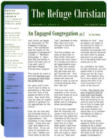

11772 196th Street § Noblesville, IN 46060 § 317-773-3475

We began distributing a monthly newsletter, The Refuge Christian via e-mail in May of 2007. The newsletter is a .pdf file, and requires Adobe Reader to view it. You can download Reader here. If you would like to receive the newsletter, please contact Stan. For those without e-mail, there will be a few paper copies of the newsletter at church on Sunday morning.
This page will be used to archive all the previous newsletters. This is the place to look if you missed an issue, or just want to look back at past issues.